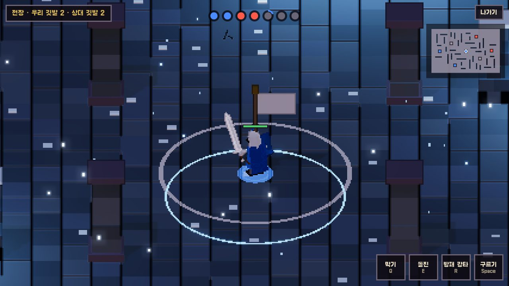
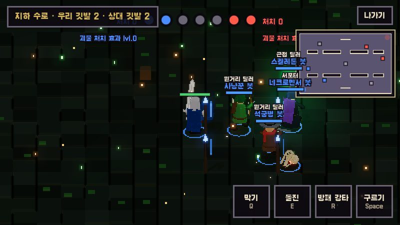
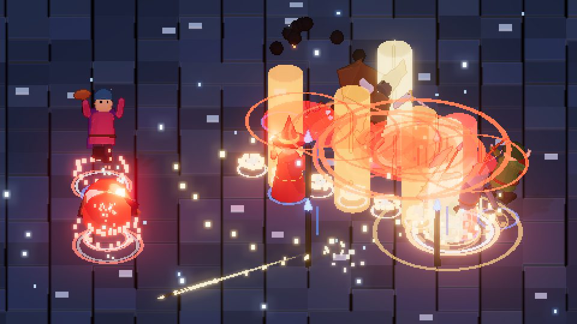

깃발 근처에 7초 머물면 점령해요. 가까이 있는 팀원이 많을수록 유리하고, 같으면 점령되지 않아요. 깃발을 모두 차지하면 승리해요.

근접·원거리 딜러, 유틸리티, 서포터가 서로 다른 일을 맡아요. 15초 뒤에 되살아나니 끝까지 포기하지 마세요.

모든 공격과 기술을 겨냥한 뒤 놓으면 나가요. 중립 괴물을 잡으면 팀이 강해지고, 연속 처치 보상도 받아요.
공격과 Q·E·R 기술이 직업마다 달라요. 게임 안에서 연습장으로 먼저 써 볼 수 있어요.
튼튼하게 버티며 공격·공격·강타로 몰아붙여요.
긴 창으로 멀리서 찌르고, 돌진과 휩쓸기로 밀어내요.
느리지만 도끼 한 방이 무거운 가장 튼튼한 전사예요.
굽은 칼로 빠르게 베고 파고드는 날랜 전사예요.
가볍고 빠른 뼈다귀예요. 파고들었다 빠져요.
몰래 파고들어 약한 한 명을 끊어요.
멀리서 쏴요. 공격을 꾹 누르면 여러 발을 한 번에 쏴요.
멀리서 한 발씩 정확히 쏘고, 저격으로 마무리해요.
가장 멀리 강한 총알을 쏘고, 연사와 도끼 휘두르기로 버텨요.
아군을 빠르게 하고, 깃발을 지키거나 빼앗아 깃발 싸움의 판을 바꿔요.
벽 너머 깃발 위를 폭탄으로 때려 점령을 방해해요.
마법 구슬과 저주로 멀리서 괴롭혀요.
길목을 막고 아군을 지켜요. 가장 오래 버텨요.
표식을 남기고, 자리를 맞바꿔 아군을 구해요.
빛 구슬로 따라붙고, 큰 빛을 꿰뚫어 쏴요.
노래로 아군을 빠르게 하고 치유해요.
넓게 휘두르는 공격으로 싸우고, 치유와 해골 소환으로 전선을 만들어요.
맵마다 모양이 달라 깃발 싸움도 달라져요. 팀은 맞은편 구석에서 시작해요.
아니요. 브라우저에서 바로 열려요.
모자란 자리는 봇이 채워요.
15초 뒤에 깃발 자리를 골라 되살아나요.